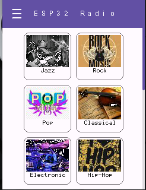

Material Design is an open-source design system created by Google in 2014 to help developers and designers build consistent, high-quality digital interfaces across Android, iOS, the web, and other platforms.
TinyMaterialDesign is a header-only Arduino library that implements the most important Material Design 3 GUI components and draws them with TinyGPU - using TinyGPU's surfaces for drawing and its TouchDriver/GestureDetector stack for touch interaction.

Features
- Material 3 theming - color schemes (including light/dark variants and seed-hue presets), shape/spacing tokens, and typography, all backed by TinyGPU's bitmap fonts
- Works with RGB565, RGB666, and RGB888 surfaces
- Over 30 Material 3 widgets covering actions, selection, input, progress, containment, navigation, and text entry - including a nestable, scrolling
ContainerandScreen(which is itself one) - A small set of layout calculators (
Core/*Layout.h) for positioning widgets - grid, linear, flow, split, anchor, stack, radial, and table - Automatic scrolling with clipping, correct gesture routing (drag latching, nested-widget dispatch) at any nesting depth, and an optional callback-driven "virtualized content" mode for lists too large to keep every item resident in memory
Documentation
Requirements
- TinyGPU 0.4.0 or newer (this library uses TinyGPU's
fillRoundRect/drawRoundRect/drawArc/pushClipRect/popClipRect)
Installation
For Arduino, you can download the library as zip and use Sketch -> Include Library -> Add .ZIP Library. Or you can git clone this project - and TinyGPU, which it depends on - into the Arduino libraries folder e.g. with
For CMake-based projects (desktop, PlatformIO, ...), CMakeLists.txt provides a TinyMaterialDesign INTERFACE target that fetches TinyGPU via FetchContent - see Building the examples below.
For ESP-IDF, TinyMaterialDesign is also usable as a component: clone both this library and TinyGPU as siblings under components/ (or add their parent directory via EXTRA_COMPONENT_DIRS) and idf_component_register/idf_component.yml take care of the rest. Like TinyGPU itself, this only compiles when arduino-esp32 is also present as a component in the same build (uncomment the dependency in idf_component.yml if you need it) - TinyMaterialDesign pulls in TinyGPU's TouchDriver.h/DeviceOutput.h, which need Arduino APIs.
Building the examples
You can build the examples to run on the desktop using cmake:
Pass -DFETCHCONTENT_SOURCE_DIR_TINYGPU=/path/to/local/TinyGPU to build against a local TinyGPU checkout instead of fetching it from GitHub.